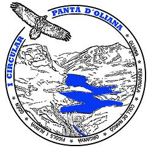

Presentació
IV Circular Pantà d'Oliana — 8 i 9 de setembre de 2012
La Circular Pantà d'Oliana és una prova creada l'any 2009 pensada ja de bon inici per a portar la Copa Catalana de Caminades de Resistència al PrePirineu de l'Alt Urgell i omplir d'aquesta manera el buit present de proves que es realitzin al Prepirineu lleidatà.
La caminada, amb sortida i arribada a Oliana i organitzada pel Grup Excursionista Oliana, té un traçat de 81Km de recorregut i 6200m de desnivell acumulat i forma part enguany de la XV Copa Catalana, puntuable amb 31 punts.
La IV edició de la Circular Pantà d'Oliana tindrà lloc els dies 8 i 9 de setembre de 2012 amb sortida a Oliana a les 17:00 hores de dissabte 8.
El període d'inscripció serà del dia 15 de juny al 31 d'agost o en arribar als 350 inscrits.
El nom de Circular Pantà d'Oliana no significa que sigui una caminada que rodeja els límits de l'embassament, sinó que el recorregut transcorre pels abruptes massissos i serres que geològicament li donen forma. És tant així, que l'embassament només es deixa veure en certs punts del recorregut, ja sigui en distàncies properes o llunyanes.
El recorregut circular va alternant el pas per massissos i serres amb diferents poblacions de l'Alt Urgell sud: muntanyes com Serra-seca, la Serra d'Aubenç, Roca del Corb en són alguns exemples. Sortint i arribant a Oliana, es passa també pels nuclis urbans d'Alinyà, Romanins, Fígols, Organyà, Coll de Nargó, les Masies, Peramola i Tragó.

Organització

Grup Excursionista d'Oliana